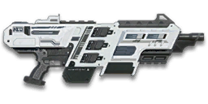

← Back to the CB-X75 comparison
Sage Guide · Nanite Systems Operatives · Light Assault / Engineer
A 1,000-cert carbine for NSO Light Assaults and Engineers — the Integration update's close-quarters carbine, with better hipfire and faster aim-down-sights movement than most carbines. This page teaches you to win fights with it today.
The one-line verdict: a fast-firing close-quarters carbine: 800 rounds per minute, 143 damage out to 15 metres, a hipfire cone of just 1.25°, and 0.75× movement speed while aiming — you keep three-quarters of your walking speed scoped, where most carbines drop you to half. It rewards strafing bursts and punishes the 3× first-shot kick if you yank the trigger. Fight between 8 and 40 metres and it will carry you.

The CB-X75 · Nanite Systems · 25-round magazine
Picture the scene, because you've probably lived it: you're sprinting across a courtyard, an enemy appears, and you do everything at once — hold the trigger down while you're still running, then press aim-down-sights (ADS) a split-second later, finger still down. The sight picture snaps in, it looks precise… and your bullets spray everywhere except the man in your crosshair. He kills you. It feels like the game cheated. It didn't — here's what actually happened.
You started firing from a sprint, from the hip. Sprinting is the least accurate state in the game: your cone of fire starts at 7.0° — fully bloomed, the widest it can ever be. Every shot you fire from the hip widens it further still (+0.10° per shot).
Then you pressed ADS mid-hold — and nothing reset. Aiming down sights does not shrink a cone of fire that is already bloomed. The scope only gives you a precise picture; the bullets keep flying out of the wide cone you built while running and hipfiring. That's the whole mystery: accurate-looking aim, wildly inaccurate gun.
Two timers stack the deck further: your gun needs about 0.3 s to settle after a sprint, and raising the sight itself takes ~0.15 s. Trigger held through all of it means your first half-second of fire is pure confetti.
1 · Feet. Let go of sprint (and the trigger, if you're already holding it). Stop, or drop into a strafe — anything but a full sprint.
2 · Sight. Press ADS and let the sight come up. This takes a heartbeat — that's fine, the enemy still has to find you first.
3 · Trigger. Now fire. Starting from the aimed cone of 0.15°, your first shots land where the dot points, and you control the bloom from zero instead of inheriting a maxed-out cone.
Stop → aim → fire. If you take one habit from this entire page, take this one. You'll practise exactly this rhythm in the simulator in section 04.
Four beats, left to right — the same mistake the cards above describe, drawn out.
1 · SprintingYour cone starts maxed at 7.0° — the widest it can ever be.
2 · Trigger heldFiring from the hip while running — every shot adds bloom.
3 · ADS, mid-holdThe sight looks precise — but aiming down sights does not reset bloom.
4 · The sprayBullets fly out of the wide cone you built. The enemy walks away.
Same fight, done right. Each beat has a job, and the order is the whole lesson.
1 · StopLet go of sprint (and the trigger). About 0.3 s for the gun to settle.
2 · AimPress ADS and let the sight come up (~0.15 s).
3 · FireNow fire — from the aimed cone. First shots land where the dot points.
The exception — under ~8 m, skip the whole danceHipfire works, no ADS needed, and stopping is optional. Keep moving, strafe, and let the hipfire ring do the work.
Every enemy infantry has 1,000 health (500 shield + 500 health). Your bullet does 143 damage up close, fading to 100 at long range. Headshots count double, leg shots count less (×0.9). That gives you three numbers worth memorising:
| Range | Damage | Head | Chest | Legs | Chest vs shielded Heavy |
|---|---|---|---|---|---|
| Close · 0–15 m | 143 | 4 | 7 | 8 | 11 |
| Mid · 15–42 m | 143→125 | 4 | 8 | 8 → 9 | 11 → 12 |
| Far · 42 m+ | 125→100 | 5 | 9 → 10 | 9 → 12 | 13 → 15 |
Perfect-accuracy times to kill: 4 headshots ≈ 0.23 s, 7 chest shots ≈ 0.45 s up close. At 800 RPM, full-damage output is 1,907 damage per second. In real fights you'll land maybe half your rounds — still, this is why the head matters so much on this gun. Note the breakpoints: you need 7 chest shots out to 15.2 m, 8 out to 42.2 m, 9 out to 63.2 m, and 10 beyond it — the falloff is a long, steady slide, not a cliff. Magazine: 25 rounds, with 200 in reserve — about three chest kills up close per magazine, two past 63 m.
Full power to 15 m, then a steady slide to minimum at 80 m. The gold line shows Soft Point Ammunition, which stretches full power to 20 m.
One gun, four fighting styles. The right technique changes with distance — use the range finder below to see what your bullets do at any range, then learn the four bands underneath it.
How to fight hereAim down sights at the upper chest and neck. Fire in bursts of 5 — your recoil climbs almost straight up into the head for free damage.
Aim: centre of the chest, from the hip. Keep moving.
Scoping in costs you time and drops you to three-quarters speed — at arm's length that gets you killed. This gun has one of the tightest hipfire cones of any carbine (1.25° standing, a 0.17 m ring at 8 m). Strafe side to side (A/D) while firing so you're hard to track.
Aim: neck / upper chest. Bursts of 5 rounds.
This is where the gun earns its keep: full 143 damage to 15 m, 8-shot kills out to 42 m, and an 800 RPM fire rate behind it. Start your crosshair at the neck — the climb walks your shots into the head, and 4 head hits end the fight in about a quarter of a second. Strafe while scoped; at 0.75× you stay quicker on your feet than most scoped carbines, and a moving target still beats a still one.
Aim: chest. Bursts of 5 rounds, pause between them.
Damage is sliding from 143 toward 125 and your cone of fire blooms if you hold the trigger. Fire a burst, release for a split second to let accuracy reset, fire again. The recoil climbs almost straight up (within ±8° of vertical, no sideways bias), so pull your mouse gently down — one direction only. Crouch or stand still when you can — crouching tightens your aimed cone to 0.10°.
Aim: chest. Taps of 3–5 rounds at exposed targets only.
At 100 damage you need 10 chest hits — a long, loud advertisement of your position. Take these shots at stationary or fleeing targets, medics reviving, and engineers on turrets. Otherwise, your better play is to close the distance behind cover. Knowing when not to shoot is a skill too.
Your accuracy is decided by two things before skill even enters it: what your body is doing (your stance sets the starting cone of fire) and what your finger is doing (holding the trigger grows that cone with every shot). The CB-X75 has no fire-mode switch — full-auto only — so "firing modes" are something you do with your finger, not a setting on the gun.
| Stance | Starting cone | What it means for you |
|---|---|---|
| Sprinting | 7.0° | Maxed out — the widest the cone can be. This is the section 01 disaster: never start firing from a sprint. |
| Hipfire, moving | 1.75° | Walking or strafing from the hip. The 0.24 m ring at 8 m in section 05 is this stance drawn out — still inside a torso, so hipfire keeps working while you move. |
| Hipfire, standing | 1.25° | Your point-blank default. The 0.17 m ring at 8 m in section 05 is this stance drawn out. |
| Hipfire, crouched | 1.25° | No tighter than standing — crouching buys you nothing from the hip on this gun. It only helps when you aim down sights (0.10° crouched vs 0.15° standing). |
| Aimed (ADS), feet planted | 0.15° | Eight times tighter than hipfire standing still. Crouch and it tightens further, to 0.10°. This is why section 01's order matters. |
| Aimed (ADS), strafing | 0.30° | Twice the planted cone — but you still move at 0.75× speed while scoped, where most carbines drop you to half speed. Strafe between bursts to stay hard to hit; plant your feet during each burst. |
One more number worth knowing: your ADAD window is 3 aimed shots (5 from the hip). Standing still, your first 3 aimed shots are the free window — after 3 shots your cone has grown to 0.30°, exactly the 0.30° moving minimum, so starting to strafe then costs nothing. The cone still grows during those 3 shots; the window is about the switch to moving, not about bloom pausing. (This is the Ideal ADAD rhythm: 3 free still shots, then move.)
| Mode | How your finger does it | Use it at |
|---|---|---|
| The mag dump | Hold the trigger and don't let go | Point blank only, or suppressing a doorway. Bloom maxes out fast — past ~8 rounds you're spraying, not aiming — and the whole 25-round magazine is gone in 1.8 seconds. |
| Bursts — the default | Hold for 5 rounds, release ~0.15 s, hold again. 6–8 rounds is fine while you're learning | Almost everything, 8–50 m. Each release resets the cone, so every burst starts at 0.15°. |
| Tap-fire | Short taps of 3–5, or single clicks, with a real pause between | 50 m and out, at exposed or stationary targets. Slow, but every round goes where the dot is. |
A target 30 m away, aiming down sights. Press and hold FIRE (mouse, touch, or hold Space with the button focused) and watch the holes walk wider the longer you hold — that's firing from an ever-growing cone. Release, let the cone reset, fire again. Aim for bursts of 5; 6–8 is tolerable while you're new. This practice window is shared by the whole Sage series: it's driven by a weapon profile plugged into the window — here the CB-X75's (800 RPM, 0.15° starting cone, 0.05° bloom per shot, target at 30 m) — and the spread is drawn at true scale from those numbers.
Cone of fire — fills as you hold, empties when you release.
Your bursts will be graded here — green at 5 rounds, tolerable up to 8.
Some things are easier to show than to say. Here's what your bullets actually do: how wide hipfire spreads at 8 metres, what a good burst rhythm looks like, and what the 2x sight really changes. The hands-on version — holding the trigger yourself — is the practice window in section 04.
A full-size target 8 m away — an arm's-length room fight. The rings show where hipfire rounds land around your aim point (the chest). Sizes are drawn to scale from the gun's real cone-of-fire numbers.
Read it this way: standing still, the 0.17 m ring sits well inside the chest — most rounds hit a target this size, which is why hipfire works point-blank. Move and it grows to 0.24 m — still inside the torso — so hipfire keeps working while you strafe, and the rings only grow with distance while the man doesn't. Past ~15 m the moving ring starts leaking past his shoulders: the exact moment to switch to aiming down sights, where the spread shrinks to a dot. (Ring sizes use the real geometry: spread diameter = 2 × distance × tan(cone ÷ 2).)
Every shot widens your cone of fire ("bloom"). Releasing the trigger for a heartbeat resets it. Same 18 rounds, two very different outcomes:
The target pattern is bursts of about 5 rounds — that's the ideal. Bursts of 6–8 are fine while you're new (call it newbie tolerance). Past that, the bloom (0.05° per shot aimed, 0.10° from the hip) keeps growing with every shot, so the extra bullets mostly decorate the wall behind your enemy instead of hitting him. Short bursts also leave you rounds for the second enemy — and with a 25-round magazine, five 5-round bursts is the whole magazine, so make them count. Remember the trap, though: a small magazine tempts you to hold the trigger to finish the kill, and a long spray is still a spray.
No zoom. The target at 35 m is small but the view is wide open — you see the crate, the tower, and the next enemy coming. Fast to aim, nothing blocks your edges. Best inside ~40 m.
Same target, same 35 m — but he looks twice as tall, so placing shots on his chest and head gets much easier. The price: your view narrows to the round window, the crate and tower are gone, and close targets feel fast and huge. Best at 25–50 m.
That's the whole 30-cert decision from section 06 in one picture: 1x for awareness, 2x for precision. Most veterans carry both and swap per base — indoors 1x, open ground 2x.
The CB-X75 costs 1,000 certs and arrives bare — iron sights, no rail, no barrel, standard ammo. Nothing below is free. Buy in the order shown and stop whenever the gun feels right. Before you spend the 1,000, know what it is: a sidegrade to the free CB-100 (714 RPM, 143→112 damage, 0.5× ADS move) — the X75 trades long-range damage (100 minimum) for 800 RPM, a tighter 1.25° hipfire cone and 0.75× ADS move.
The default post-and-notch sights. Usable, but a reflex dot is a real upgrade on a gun you'll aim as much as this one.
Good: nothing costs nothing — they work at every range until you buy a sight.
Bad: precision past 25 m — the thick front post covers a head-sized target at range. That's what the reflex sights fix.
A clean red-dot sight with no zoom. Your best all-round option once you own it.
Good: everywhere indoors and out to ~40 m — which is most PlanetSide fights.
Bad: picking out targets past 50 m; that's what the 2x is for.
Doubles your view magnification. Costs almost nothing — the price of a few kills.
Good: open-field bases, tower fights, and your 25–50 m burst game. Swap between 1x and 2x per fight.
Bad: tight indoor rooms — the zoom makes close targets feel fast and huge.
Highlights warm bodies through smoke and darkness, out to ~80 m.
Good: smoke-heavy point fights and night bases.
Bad: daylight and open fields — the 1x picture is worse than the ABLE 1.0 for the same job.
A 3.4x scope. More zoom than this rifle wants — and the 4x and 6x scopes don't exist for it at all.
Good: almost never on a close-quarters carbine — the scope sway and tunnel vision cost more kills than the zoom wins.
Bad: any fight under 50 m, which is most of them.
The CB-X75's recoil is already moderate and almost straight up. Plenty of veterans run this slot empty forever.
Good: your first weeks. Spend certs on your suit and class tools first.
Bad: nothing — there's no downside to an empty slot.
Cuts vertical recoil by 30% (0.25–0.33° becomes 0.18–0.23° per shot) — and the first-shot kick with it (0.75–0.99° becomes 0.53–0.69°). This gun takes no Compensator, so this is your only recoil-taming barrel.
Good: if you mostly aim down sights at mid-range and the climb bothers you.
Bad: pure hipfire builds, where it does nothing at all — and never together with another barrel; the slot holds one.
Hipfire bloom grows 40% slower (0.10° becomes 0.06° per shot) — much steadier hip spraying. But vertical recoil rises 20% when you do aim (0.25–0.33° becomes 0.30–0.40°).
Good: a dedicated close-quarters build paired with the Laser Sight.
Bad: general play — it taxes the aimed shooting you'll do most.
You vanish from the minimap when firing and your shots are quiet. In exchange, damage starts dropping off 20 m sooner — minimum damage now arrives at 60 m instead of 80 m — and bullets fly 15% slower (500 → 425 m/s), harder to lead moving targets.
Good: flanking behind enemy lines, rooftop and tree work, solo play behind the front.
Bad: front-line fighting where everyone already knows where you are — you pay the damage cost for stealth you don't need.
Hides your muzzle flash so your own view stays clear at night — but you appear on enemy minimaps from 15 m farther away.
Good: night fights where your own flash blinds you. A comfort pick, nothing more.
Bad: as an early purchase — it changes no fight outcome. Buy it last, if ever.
The CB-X75 ships with an empty rail. Plenty of veterans run it empty until they pick a playstyle.
Good: your first weeks. Spend certs on your suit and class tools first.
Bad: nothing — there's no downside to an empty slot.
Cuts side-to-side recoil by 25% (horizontal 0.245–0.265° becomes 0.18–0.20°, tolerance 1.0° → 0.75°), keeping your bursts on a single target. Tiny cost: weapon swap is 0.15 s slower (0.55 s → 0.70 s to raise).
Good: the default for aimed, mid-range play — leave it on until you deliberately build for hipfire or the extra rounds.
Bad: nothing meaningful. It only stops helping if you never aim down sights.
Hipfire accuracy improves by a third (33% tighter cone: 1.25° becomes 0.83° standing still, 1.75° becomes 1.17° moving). Replaces the Forward Grip — you can't have both.
Good: indoor point-holds and stairwell fights where you hipfire inside 8 m.
Bad: open bases — you give up aimed recoil control for a bonus you rarely use.
The first shot of each burst kicks 60% less (0.75–0.99° becomes 0.30–0.40°) — but side-to-side recoil rises 10% on everything (0.245–0.265° becomes 0.27–0.29°).
Good: disciplined burst and tap-fire at 25 m+, where every burst starts fresh — and this gun's 3× first-shot kick is one of the harshest in the carbine class, so the trade pays better here than on most guns.
Bad: beginners' longer bursts — past 5 rounds the sideways penalty is doing more harm than the first-shot saving.
Five extra rounds per magazine (25 → 30). Cost: the weapon takes 15% longer to raise and lower (0.55 s → 0.63 s to raise, 0.25 s → 0.29 s to lower).
Good: if you keep running dry mid-fight against groups — 30 rounds is a fourth chest kill up close.
Bad: as an early buy — 200 certs is a lot for five rounds, and it takes the rail slot, so no Forward Grip or Laser Sight alongside it.
A torch whose beam reveals cloaked infiltrators. Toggle it with the attachment key (X by default).
Good: hunting a stalker infiltrator camping your capture point — sweep corners with it.
Bad: as your everyday rail — it gives zero accuracy help, and the beam advertises your position.
Full 143 damage now reaches to 20 m instead of 15 m (the gold line on the chart above) — your 7-shot kill stretches to 20.2 m. Cost: bullets fly 10% slower (500 → 450 m/s).
Good: nearly always — most duels happen at 15–25 m, exactly where this extends your 7-shot kill.
Bad: long-range duels against runners, where the slower bullet needs more lead. A small price.
Bullets fly 10% faster (500 → 550 m/s) and minimum damage now holds to 100 m instead of 80 m — but full damage ends at 13 m instead of 15 m.
Good: lane-holding at 50 m+, where the faster bullet and longer reach matter more than two metres of full damage.
Bad: close fights — you give up full-damage range for speed you don't need under 25 m.
1,000 certs · The gun itself
What 1,000 certs buys you before a single attachment. Genuinely usable — learn the gun on this before spending anything.
230 certs in attachments · Recommended
The best value in this whole guide. Covers every fight from a doorway to a tower courtyard.
330 certs in attachments · Indoor brawler
Built to hipfire down stairwells and hold a capture point room. Swap back to the All-Rounder outdoors.
330 certs in attachments · Mid-range
Fast bullets, tamed climb, tight sideways control — park on a lane and hold it at 25–50 m. Weak in a fair room fight, so don't take fair room fights: fight from cover, at range.
Headshots deal double damage: 4 kills up close versus 7 to the chest — 0.23 s instead of 0.45 s. Don't aim at the head directly — aim at the neck and let the gun's near-vertical climb carry shots two and three into the skull. Even one headshot in the mix cuts a close kill from 7 shots to 6 (0.45 s to 0.38 s). It's the single biggest damage upgrade you own, and it's free.
Every shot widens your cone of fire. Holding the trigger past ~8 rounds at range means later bullets fly around your target, not into it. Five rounds is the ideal burst; release the trigger for a heartbeat between bursts — your accuracy resets and your hits per magazine roughly double. And respect the 25-round magazine: five 5-round bursts is the whole mag, so every burst has to earn its place.
Reloading with even 1 bullet left takes 2.15 s; an empty gun takes 2.45 s — only 0.30 s more — a small empty penalty — but a reload at the wrong moment still gets you killed. Count roughly: after two kills or ~15 rounds, duck behind cover and reload early. Treat the last 10 rounds as your emergency reserve, not your working magazine.
You keep 75% of your walking speed while aiming down sights, where most carbines drop you to half. Use it: strafe between bursts and your enemy's return fire has to track a moving target. The rhythm is in section 04 — 3 still shots, then move, and the switch costs nothing.
Walk with your crosshair at head height, pointed where an enemy's head will appear — a doorway edge, a corner, stairs. Most beginners lose fights in the half-second spent dragging the crosshair onto target. While firing, tap A/D to strafe: a moving target is dramatically harder to headshot back.
Your damage, accuracy and fire rate all shine at close-mid range, and your aimed cone stays tight far longer than most carbines'. Sprint between cover, use buildings and rocks as stepping stones, and arrive at your range before opening fire. The player who chooses the range usually wins the duel — make it you.
Every gun has a price. Here's where the CB-X75 pays — and the habit that covers each hole.
25 rounds is gone in 1.8 seconds of holding the trigger — about three chest kills up close, two past 63 m — and the Extended Magazine only adds 5 rounds. A third enemy while you're still on your first magazine is a problem, not a plan.
Play around it: burst discipline (habit 2) and early reloads (habit 3). Your 2.15 s short reload is quick — reloading often is the design, not a failure.
The first round of every burst jumps with a 3× multiplier — the first shot alone climbs 0.75–0.99° straight up, two to three times a normal round. Yank the trigger and your opening shot climbs off the head before the burst even starts.
Play around it: start each burst a touch low and let the climb walk into the target, or fit the Angled Forward Grip — it cuts that first-shot kick by 60% (0.30–0.40°).
Past 42 m you're at 9 chest shots, past 63 m it's 10 — 0.68 s best case, against a target that is shooting back. At 100 damage a kill needs a third of your magazine.
Play around it: tap-fire at exposed targets only, and spend the rest of the time closing distance. High Velocity Ammunition stretches the minimum-damage range to 100 m, but it can't give you the damage back.
Your sideways tolerance is a full 1.0° — wider than most carbines — so long bursts walk off target sideways, not just up. The climb you can pull against; the sideways drift you can't.
Play around it: keep bursts to 5 and let the cone reset, or fit the Forward Grip — it tightens the sideways tolerance to 0.75°.
500 m/s is on the slow side — at 50 m your bullet takes a tenth of a second to arrive, and a sprinting target has moved about half a metre by then. You have to lead runners, not track them.
Play around it: aim a body-width ahead of moving targets past 40 m, and take High Velocity Ammunition (550 m/s) if you fight open ground a lot. Inside 25 m the travel time barely matters.
Open the world map, travel to VR Training, and run these on the target dummies. Five minutes before a play session beats an hour of dying confused.
Aim at a wall 20 m away and empty a full magazine without touching the mouse. Watch the bullet pattern climb almost straight up — that's your gun's fingerprint, and the first shot jumps hardest (3×). Repeat, this time pulling straight down, until the group stays fist-sized.
Walk the dummy range keeping your crosshair glued to neck height the whole time, snapping to each new target without dipping to the floor or sky. Slow and clean first; speed comes on its own.
At 30–40 m, kill dummies with bursts of 5, releasing the trigger fully between bursts. If a burst goes wide, shorten it. Goal: whole kills without a single wild round — even though your aimed cone caps at 3.0°, bloom still moves the later shots.
Pick a dummy, stand 5 m away, and circle it with A/D while hipfiring it down without stopping. This is your point-blank survival skill — the one that fires while your movement does the defending.
Fire exactly 15 rounds, step behind a pillar, reload, repeat. Train your hands to reload early and only in cover until it's automatic — with a 2.15 s reload, in real fights you'll do it without thinking, which is the point.